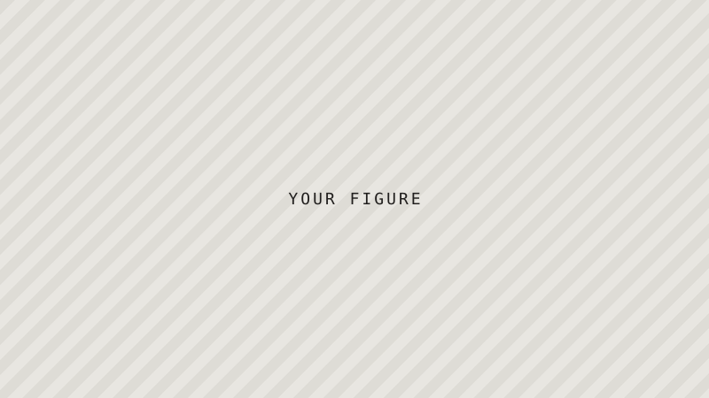

Area one · 2022 – now
Project or research area one
Two or three sentences: the question you ask, the approach you take, and what you found or expect to find.
A short paragraph on the through-line connecting your projects — the problem you keep coming back to.

Area one · 2022 – now
Two or three sentences: the question you ask, the approach you take, and what you found or expect to find.
Area two · 2020 – 2022
Two or three sentences: the question you ask, the approach you take, and what you found or expect to find.
Area three · 2018 – 2020
Two or three sentences: the question you ask, the approach you take, and what you found or expect to find.
Say what you're open to — joint projects, student supervision, data sharing, advisory work.